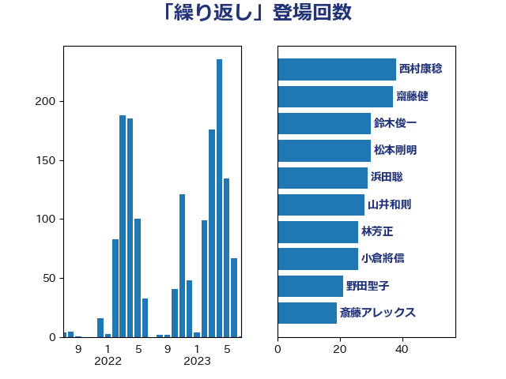

単語「繰り返し」

| 西村康稔 | 自由民主党 | 38 回 |
| 齋藤健 | 自由民主党 | 37 回 |
| 鈴木俊一 | 自由民主党 | 30 回 |
| 松本剛明 | 自由民主党 | 30 回 |
| 浜田聡 | NHK党 | 29 回 |
| 山井和則 | 立憲民主党 | 28 回 |
| 林芳正 | 自由民主党 | 26 回 |
| 小倉將信 | 自由民主党 | 26 回 |
| 野田聖子 | 自由民主党 | 21 回 |
| 斎藤アレックス | 国民民主党 | 19 回 |
| 松野博一 | 自由民主党 | 17 回 |
| 足立康史 | 日本維新の会 | 15 回 |
| 馬淵澄夫 | 立憲民主党 | 14 回 |
| 古川禎久 | 自由民主党 | 14 回 |
| 後藤茂之 | 自由民主党 | 13 回 |
| 音喜多駿 | 日本維新の会 | 12 回 |
| 吉田統彦 | 立憲民主党 | 11 回 |
| 鰐淵洋子 | 公明党 | 10 回 |
| 鬼木誠 | 立憲民主党 | 10 回 |
| 高木かおり | 日本維新の会 | 10 回 |
| 木原誠二 | 自由民主党 | 10 回 |
| 階猛 | 立憲民主党 | 8 回 |
| 阿部司 | 日本維新の会 | 8 回 |
| 小林鷹之 | 自由民主党 | 8 回 |
| 金子恭之 | 自由民主党 | 7 回 |
| 秋葉賢也 | 自由民主党 | 7 回 |
| 永岡桂子 | 自由民主党 | 7 回 |
| 森本真治 | 立憲民主党 | 7 回 |
| 山際大志郎 | 自由民主党 | 7 回 |
| 阿部知子 | 立憲民主党 | 6 回 |
| 金子恵美 | 立憲民主党 | 6 回 |
| 金子俊平 | 自由民主党 | 6 回 |
| 萩生田光一 | 自由民主党 | 6 回 |
| 河野太郎 | 自由民主党 | 6 回 |
| 柴田巧 | 日本維新の会 | 6 回 |
| 本田顕子 | 自由民主党 | 6 回 |
| 太栄志 | 立憲民主党 | 6 回 |
| 馬場伸幸 | 日本維新の会 | 5 回 |
| 鈴木義弘 | 国民民主党 | 5 回 |
| 鈴木庸介 | 立憲民主党 | 5 回 |
| 西村明宏 | 自由民主党 | 5 回 |
| 舟山康江 | 国民民主党 | 5 回 |
| 羽田次郎 | 立憲民主党 | 5 回 |
| 秋本真利 | 無所属 | 5 回 |
| 田村智子 | 日本共産党 | 5 回 |
| 吉田宣弘 | 公明党 | 5 回 |
| 住吉寛紀 | 日本維新の会 | 5 回 |
| 重徳和彦 | 立憲民主党 | 4 回 |
| 自見はなこ | 自由民主党 | 4 回 |
| 田村まみ | 国民民主党 | 4 回 |
| 牧義夫 | 立憲民主党 | 4 回 |
| 渡辺周 | 立憲民主党 | 4 回 |
| 津島淳 | 自由民主党 | 4 回 |
| 杉田水脈 | 自由民主党 | 4 回 |
| 杉尾秀哉 | 立憲民主党 | 4 回 |
| 末次精一 | 立憲民主党 | 4 回 |
| 徳永エリ | 立憲民主党 | 4 回 |
| 岸田文雄 | 自由民主党 | 4 回 |
| 小野泰輔 | 日本維新の会 | 4 回 |
| 小西洋之 | 立憲民主党 | 4 回 |
| 小沼巧 | 立憲民主党 | 4 回 |
| 安江伸夫 | 公明党 | 4 回 |
| 大塚耕平 | 国民民主党 | 4 回 |
| 和田政宗 | 自由民主党 | 4 回 |
| 吉良州司 | 無所属 | 4 回 |
| 井出庸生 | 自由民主党 | 4 回 |
| 井上哲士 | 日本共産党 | 4 回 |
| 中司宏 | 日本維新の会 | 4 回 |
| 高橋千鶴子 | 日本共産党 | 3 回 |
| 馬場雄基 | 立憲民主党 | 3 回 |
| 青柳仁士 | 日本維新の会 | 3 回 |
| 青山大人 | 立憲民主党 | 3 回 |
| 金村龍那 | 日本維新の会 | 3 回 |
| 金子道仁 | 日本維新の会 | 3 回 |
| 赤木正幸 | 日本維新の会 | 3 回 |
| 赤嶺政賢 | 日本共産党 | 3 回 |
| 谷田川元 | 立憲民主党 | 3 回 |
| 谷公一 | 自由民主党 | 3 回 |
| 西村智奈美 | 立憲民主党 | 3 回 |
| 米山隆一 | 立憲民主党 | 3 回 |
| 神谷宗幣 | 参政党 | 3 回 |
| 礒崎哲史 | 国民民主党 | 3 回 |
| 矢倉克夫 | 公明党 | 3 回 |
| 田嶋要 | 立憲民主党 | 3 回 |
| 牧山ひろえ | 立憲民主党 | 3 回 |
| 源馬謙太郎 | 立憲民主党 | 3 回 |
| 柳本顕 | 自由民主党 | 3 回 |
| 柳ヶ瀬裕文 | 日本維新の会 | 3 回 |
| 松本尚 | 自由民主党 | 3 回 |
| 末松信介 | 自由民主党 | 3 回 |
| 打越さく良 | 立憲民主党 | 3 回 |
| 宮本岳志 | 日本共産党 | 3 回 |
| 大串博志 | 立憲民主党 | 3 回 |
| 和田有一朗 | 日本維新の会 | 3 回 |
| 前川清成 | 日本維新の会 | 3 回 |
| 仁木博文 | 無所属 | 3 回 |
| 中島克仁 | 立憲民主党 | 3 回 |
| 高良鉄美 | 無所属 | 2 回 |
| 鈴木敦 | 国民民主党 | 2 回 |
| 逢坂誠二 | 立憲民主党 | 2 回 |
| 藤巻健太 | 日本維新の会 | 2 回 |
| 若宮健嗣 | 自由民主党 | 2 回 |
| 美延映夫 | 日本維新の会 | 2 回 |
| 緒方林太郎 | 無所属 | 2 回 |
| 簗和生 | 自由民主党 | 2 回 |
| 秋野公造 | 公明党 | 2 回 |
| 磯崎仁彦 | 自由民主党 | 2 回 |
| 田畑裕明 | 自由民主党 | 2 回 |
| 玉木雄一郎 | 国民民主党 | 2 回 |
| 渡辺創 | 立憲民主党 | 2 回 |
| 清水貴之 | 日本維新の会 | 2 回 |
| 浅野哲 | 国民民主党 | 2 回 |
| 浅田均 | 日本維新の会 | 2 回 |
| 泉健太 | 立憲民主党 | 2 回 |
| 沢田良 | 日本維新の会 | 2 回 |
| 永井学 | 自由民主党 | 2 回 |
| 櫻井周 | 立憲民主党 | 2 回 |
| 櫻井充 | 自由民主党 | 2 回 |
| 梅村聡 | 日本維新の会 | 2 回 |
| 星野剛士 | 自由民主党 | 2 回 |
| 平山佐知子 | 無所属 | 2 回 |
| 市村浩一郎 | 日本維新の会 | 2 回 |
| 川合孝典 | 国民民主党 | 2 回 |
| 岩田和親 | 自由民主党 | 2 回 |
| 山田勝彦 | 立憲民主党 | 2 回 |
| 山下貴司 | 自由民主党 | 2 回 |
| 寺田学 | 立憲民主党 | 2 回 |
| 室井邦彦 | 日本維新の会 | 2 回 |
| 天畠大輔 | れいわ新選組 | 2 回 |
| 大家敏志 | 自由民主党 | 2 回 |
| 嘉田由紀子 | 無所属 | 2 回 |
| 和田義明 | 自由民主党 | 2 回 |
| 吉田はるみ | 立憲民主党 | 2 回 |
| 吉川赳 | 無所属 | 2 回 |
| 北神圭朗 | 無所属 | 2 回 |
| 加藤勝信 | 自由民主党 | 2 回 |
| 倉林明子 | 日本共産党 | 2 回 |
| 井野俊郎 | 自由民主党 | 2 回 |
| 中谷一馬 | 立憲民主党 | 2 回 |
| 中川康洋 | 公明党 | 2 回 |
| 上田英俊 | 自由民主党 | 2 回 |
| 三上えり | 立憲民主党 | 2 回 |
| 高木啓 | 自由民主党 | 1 回 |
| 高市早苗 | 自由民主党 | 1 回 |
| 青山繁晴 | 自由民主党 | 1 回 |
| 阿部弘樹 | 日本維新の会 | 1 回 |
| 長峯誠 | 自由民主党 | 1 回 |
| 長妻昭 | 立憲民主党 | 1 回 |
| 鈴木貴子 | 自由民主党 | 1 回 |
| 鈴木英敬 | 自由民主党 | 1 回 |
| 野間健 | 立憲民主党 | 1 回 |
| 野村哲郎 | 自由民主党 | 1 回 |
| 野中厚 | 自由民主党 | 1 回 |
| 西銘恒三郎 | 自由民主党 | 1 回 |
| 西田昌司 | 自由民主党 | 1 回 |
| 藤岡隆雄 | 立憲民主党 | 1 回 |
| 荒井優 | 立憲民主党 | 1 回 |
| 若松謙維 | 公明党 | 1 回 |
| 芳賀道也 | 国民民主党 | 1 回 |
| 緑川貴士 | 立憲民主党 | 1 回 |
| 細野豪志 | 自由民主党 | 1 回 |
| 笠井亮 | 日本共産党 | 1 回 |
| 竹詰仁 | 国民民主党 | 1 回 |
| 福重隆浩 | 公明党 | 1 回 |
| 福田昭夫 | 立憲民主党 | 1 回 |
| 福島伸享 | 無所属 | 1 回 |
| 福島みずほ | 社会民主党 | 1 回 |
| 石橋通宏 | 立憲民主党 | 1 回 |
| 石原正敬 | 自由民主党 | 1 回 |
| 石原宏高 | 自由民主党 | 1 回 |
| 石井章 | 日本維新の会 | 1 回 |
| 田中英之 | 自由民主党 | 1 回 |
| 玄葉光一郎 | 立憲民主党 | 1 回 |
| 牧島かれん | 自由民主党 | 1 回 |
| 滝波宏文 | 自由民主党 | 1 回 |
| 深澤陽一 | 自由民主党 | 1 回 |
| 浜野喜史 | 国民民主党 | 1 回 |
| 浜田靖一 | 自由民主党 | 1 回 |
| 浜地雅一 | 公明党 | 1 回 |
| 浜口誠 | 国民民主党 | 1 回 |
| 浅尾慶一郎 | 自由民主党 | 1 回 |
| 池畑浩太朗 | 日本維新の会 | 1 回 |
| 武井俊輔 | 自由民主党 | 1 回 |
| 櫛渕万里 | れいわ新選組 | 1 回 |
| 横山信一 | 公明党 | 1 回 |
| 榛葉賀津也 | 国民民主党 | 1 回 |
| 森田俊和 | 立憲民主党 | 1 回 |
| 森屋隆 | 立憲民主党 | 1 回 |
| 梅谷守 | 立憲民主党 | 1 回 |
| 木村次郎 | 自由民主党 | 1 回 |
| 早坂敦 | 日本維新の会 | 1 回 |
| 新妻秀規 | 公明党 | 1 回 |
| 斉藤鉄夫 | 公明党 | 1 回 |
| 掘井健智 | 日本維新の会 | 1 回 |
| 徳永久志 | 無所属 | 1 回 |
| 後藤祐一 | 立憲民主党 | 1 回 |
| 庄子賢一 | 公明党 | 1 回 |
| 平沼正二郎 | 自由民主党 | 1 回 |
| 川崎ひでと | 自由民主党 | 1 回 |
| 岡田克也 | 立憲民主党 | 1 回 |
| 山本香苗 | 公明党 | 1 回 |
| 山本剛正 | 日本維新の会 | 1 回 |
| 山崎誠 | 立憲民主党 | 1 回 |
| 山岸一生 | 立憲民主党 | 1 回 |
| 山岡達丸 | 立憲民主党 | 1 回 |
| 山口晋 | 自由民主党 | 1 回 |
| 山下芳生 | 日本共産党 | 1 回 |
| 小川淳也 | 立憲民主党 | 1 回 |
| 小山展弘 | 立憲民主党 | 1 回 |
| 小宮山泰子 | 立憲民主党 | 1 回 |
| 宮路拓馬 | 自由民主党 | 1 回 |
| 宮本徹 | 日本共産党 | 1 回 |
| 宮本周司 | 自由民主党 | 1 回 |
| 宮崎雅夫 | 自由民主党 | 1 回 |
| 宮崎政久 | 自由民主党 | 1 回 |
| 奥野総一郎 | 立憲民主党 | 1 回 |
| 大野敬太郎 | 自由民主党 | 1 回 |
| 大西健介 | 立憲民主党 | 1 回 |
| 塩村あやか | 立憲民主党 | 1 回 |
| 塩川鉄也 | 日本共産党 | 1 回 |
| 堤かなめ | 立憲民主党 | 1 回 |
| 堀場幸子 | 日本維新の会 | 1 回 |
| 城井崇 | 立憲民主党 | 1 回 |
| 土田慎 | 自由民主党 | 1 回 |
| 國重徹 | 公明党 | 1 回 |
| 吉良よし子 | 日本共産党 | 1 回 |
| 吉田とも代 | 日本維新の会 | 1 回 |
| 古賀之士 | 立憲民主党 | 1 回 |
| 務台俊介 | 自由民主党 | 1 回 |
| 加藤鮎子 | 自由民主党 | 1 回 |
| 前原誠司 | 国民民主党 | 1 回 |
| 保岡宏武 | 自由民主党 | 1 回 |
| 佐藤正久 | 自由民主党 | 1 回 |
| 伊藤孝恵 | 国民民主党 | 1 回 |
| 伊東信久 | 日本維新の会 | 1 回 |
| 伊佐進一 | 公明党 | 1 回 |
| 仁比聡平 | 日本共産党 | 1 回 |
| 中谷真一 | 自由民主党 | 1 回 |
| 中田宏 | 自由民主党 | 1 回 |
| 中曽根康隆 | 自由民主党 | 1 回 |
| 中川貴元 | 自由民主党 | 1 回 |
| 中山展宏 | 自由民主党 | 1 回 |
| 上田清司 | 国民民主党 | 1 回 |
| 上田勇 | 公明党 | 1 回 |
| 三宅伸吾 | 自由民主党 | 1 回 |
| たがや亮 | れいわ新選組 | 1 回 |